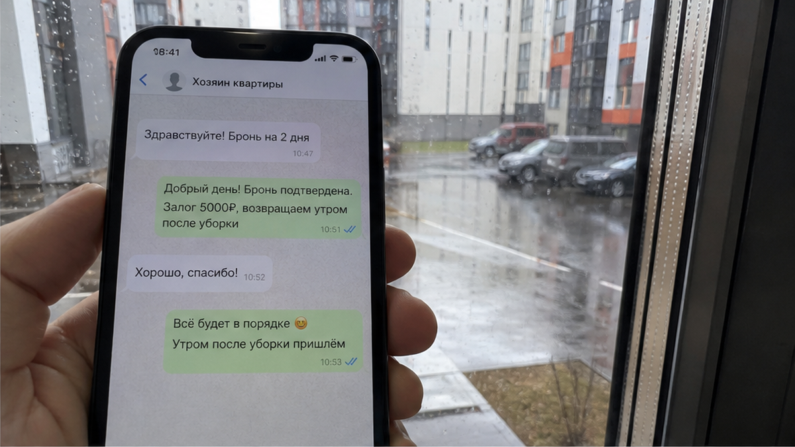
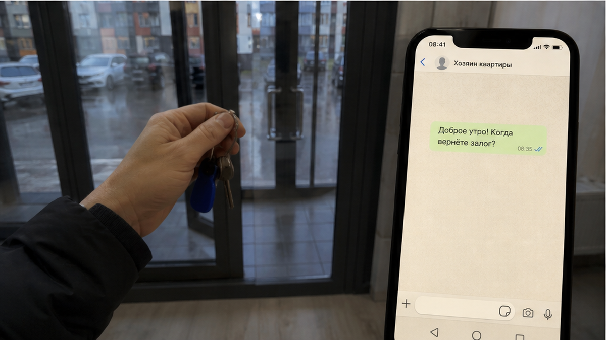
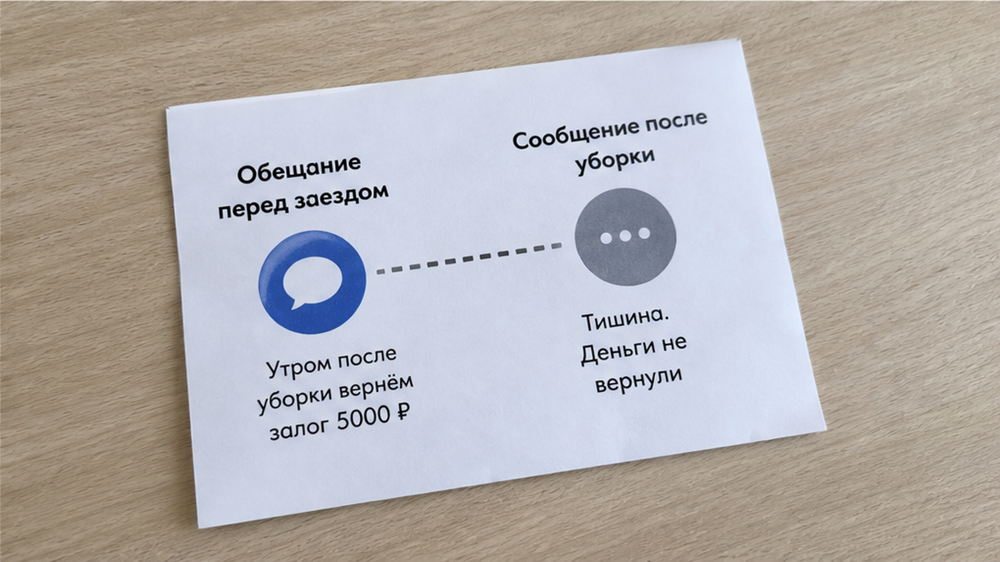

«Залог верну утром, как только сдадите ключи», — это сообщение гость пересылает мне скриншотом. Квартира на две ночи, 2 700 ₽ за ночь, итого 5 400 ₽ за проживание. Сверху ещё 5 000 ₽ залога, переводом на карту до заезда. То есть почти столько же, сколько стоило само жильё. Гость согласился, потому что «утром» звучит как «сразу». Ключи он оставил в почтовом ящике, как просили, и написал «сдал». Ответ пришёл не сразу, а ближе к полудню: «Залог вернём после уборки, уборщица будет вечером». Оказалось, что слово «утром» с самого начала означало «когда-нибудь после того, как мы сами решим, что всё в порядке».
Теперь представьте себя на его месте: в такси с чемоданом, до поезда меньше часа, в приложении минус 10 400 ₽, а пять тысяч из них висят в чужом чате без срока. Квартиру при вас никто не смотрел. В этом и ловушка залога посуточно: деньги отдаёте сразу, условие возврата узнаёте, когда уже ничего не сделать.
Я хост посуточной в Тюмени. Это «Добрый дом».

Я попросил гостя прислать переписку целиком, с самого первого сообщения. Это важно: обычно спорят о том, «что имелось в виду», а смотреть надо на то, что было написано на самом деле.
До брони гость спросил прямо: «Залог возвращаете когда?» Ответ хоста: «Утром в день выезда, не переживайте, у нас всё честно». Больше ничего. Ни слова о проверке, ни слова об уборке, ни слова о том, кто и как смотрит квартиру.
Уже после перевода, за день до заезда, пришло длинное сообщение с правилами: не курить, не шуметь после одиннадцати, ключи в почтовый ящик. В самом конце, отдельной строкой: «Залог возвращается после проверки квартиры». Гость прочитал это как формальность. Кто откажется от проверки? Пусть проверяют.
А в утро выезда прозвучало третье условие: «после уборки». И уборка «вечером».
Обратите внимание: за три дня обещание сдвинули три раза — от «утром» к «после проверки» и к «после уборки, вечером», без прямой отмены предыдущих слов.

Дальше всё развивалось по знакомой схеме. Гость пишет: «Ключи в ящике, квартира чистая, посуду помыл». Тишина. Через какое-то время: «Подскажите, когда ждать залог?» Ответ: «Сегодня, после уборки». Гость: «Вы же писали утром». Хост: «Утром — это если бы уборщица была утром, сегодня она вечером. Не волнуйтесь, вернём».
Вечером гость уже в поезде. Он пишет снова. Ответ: «Уборщица нашла пятно на диване, уточняем». Фото пятна нет. Когда его спросили, было ли пятно до заезда, ответа нет. Наутро хост предлагает: «Вернём 3 500, остальное на химчистку».
На этом месте сумма перестаёт быть абстрактной. 1 500 ₽ удержаны за пятно, которого гость не видел. Его не показали, не сфотографировали при выезде, и никто не сравнил его с состоянием дивана при заезде. Цена «утреннего» обещания вышла такой: 1 500 ₽ потеряны, ещё сутки 3 500 ₽ висели без срока, а гость написал больше десятка сообщений, пока ехал в поезде. И доказать он уже ничего не может, потому что сам уехал раньше, чем кто-то посмотрел квартиру.
Похожий сценарий я разбирал на уборке: написали «уборка включена», а на выезде 1 800 ₽ за грязные простыни. Механика та же. Слово, которое до брони звучало как гарантия, после выезда становится поводом удержать деньги.

Проще всего обвинить уборщицу, которая пришла вечером. Или банк, который «долго переводит». Или пятно, которое «кто-то» поставил.
Не уборщица. Не банк. Не пятно. А то, что в обещании не было названо событие, после которого деньги возвращаются.
«Утром» не событие, а время суток, и его можно растянуть до вечера. «После проверки» тоже не событие, пока не сказано, кто проверяет, когда и в каком виде гость получает результат. «После уборки» и вовсе условие, на которое гость никак не влияет: он уже уехал, а уборщица придёт тогда, когда ей удобно.
Залог по своей сути простая вещь. Это деньги, которые гарантируют, что квартиру вернут в том же виде, в каком её отдали. Значит, вернуть их можно сразу, как только этот вид сверили. Не позже. Если сверка назначена на вечер, а гость уезжает днём, сверять будут без него. А всё, что сверяют без вас, сверяют не в вашу пользу.
Отдельная история, когда залог всплывает уже у двери, хотя в фильтре было обещано обратное. Об этом я писал здесь: «без залога» в фильтре, залог у двери. Там гость хотя бы видит требование до заезда. Здесь всё хитрее: залог честно назван, а подвох спрятан в сроке.
Вам когда-нибудь возвращали залог позже, чем обещали, или меньше, чем переводили? Какой формулировкой это объяснили: «после уборки», «после проверки», «банк задерживает»? Напишите в Telegram или MAX. Мне важно собрать, какими словами чаще всего прикрывают удержание.
Не нужно спрашивать, «возвращаете ли вы залог». Все ответят «да». Не нужно спрашивать «когда». Ответят «утром», «сразу», «в тот же день».
Спросите так:
«После какого именно действия вы переводите залог обратно, и что будет, если я уеду раньше, чем придёт уборщица?»
Хороший ответ звучит конкретно: «После того как вы пришлёте фото квартиры и я их подтвержу, перевод сразу». Или: «Встречу вас на выезде, посмотрим вместе, верну на месте». В таком ответе есть событие, есть участник и нет чужого графика.
Плохой ответ звучит обиженно: «Да что вы, мы никого не обманываем». Или туманно: «Как только всё проверим». Или честно, но невыгодно для вас: «После уборки, обычно в течение дня». Последний вариант хотя бы честный. Но тогда вы знаете заранее, что пять тысяч будут висеть до вечера, и решаете, готовы ли вы к этому.
Этот же принцип работает и с предоплатой. Если ответ на простой вопрос приходит только после перевода, вы уже в слабой позиции. Подробно я разбирал это здесь: перевели 3 000 предоплатой, к вечеру тишина в чате.
В этой истории всё случилось в обратном порядке. Сначала гость перевёл залог. Потом получил правила с «проверкой». Потом услышал про «уборку». Потом узнал про пятно. Каждое новое условие приходило тогда, когда деньги уже были у хоста.
Правильный порядок противоположный. Сначала условие возврата названо словами, в чате, до брони. Потом перевод залога. При выезде то же самое: сначала проверка при вас или по фото, потом ключи, потом возврат.
Сначала проверка. Потом перевод. Не наоборот.
Когда вы ищете, где снять квартиру посуточно в Тюмени, легко сравнивать только цену за ночь и фотографии. Но 2 700 ₽ за ночь с залогом, который вернут «когда-нибудь вечером, если не найдут пятно», на деле дороже 3 000 ₽ за ночь с залогом, который вернут при вас. Разница в цене ночи заметна сразу. Разницу в возврате залога вы узнаёте уже в такси.
Обещали вернуть залог утром — значит, срок не должен растворяться в «после уборки», когда вы уже в поезде. Сначала называют событие возврата и проверку при вас, потом принимают ключи и переводят деньги — не наоборот.
Нужна квартира в Тюмени или хотите сверить условия залога до перевода?
Telegram: t.me/Dobriy_dom_72
MAX: max.ru/id660300569233_biz
Менеджер: t.me/Dobriy_dom_Tyumen
Бронирование: добрыйдом-72.рф · /booking/
Телефон: +7 993 574-83-22